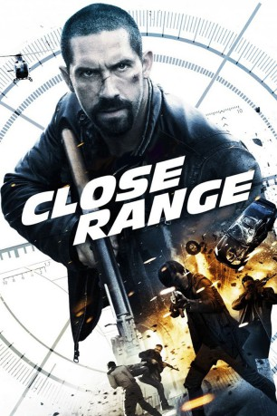

#7183 Close Range
 
 IMDB-Wertung: 5.0 / 10
IMDB-Wertung: 5.0 / 10  Tomatometer: 83
Tomatometer: 83  Metascore: 0
Metascore: 0 
Colton MacReady macht kurzen Prozess, als er erfährt, dass sich seine junge Nichte in der Gewalt eines mexikanischen Drogenkartells befindet. Der ehemalige Elitesoldat macht die Verbrecher ausfindig, rettet das Mädchen aus ihren Fängen und hinterlässt dabei einen Berg an Leichen. Doch das ist nicht der einzige Grund, warum die Meute nun hinter ihm her ist, denn er hat unwissentlich einen Datenspeicher mit brisanten Informationen über die kriminelle Organisation mitgenommen. Nun sind MacReady und seine Familie Freiwild für die Gangster, die vor nichts zurückschrecken, um ihr Eigentum zurückzubekommen. Schon bald muss der Ex-Soldat erkennen, dass es allein an ihm ist, seine Liebsten zu beschützen – denn auch in den Behörden und der Politik haben die Drogenhändler ihre Verbündeten.
Jahr: 2015
Dauer: 85 Minuten
FSK: 18
Land: USA Studio: AlchemyTonspuren: DTS - ,
Untertitel:
Auflösung: 1080p (1920x1040) Größe: 4884 MB
Genre: Action, Krimi
Regisseur: Isaac Florentine
Drehbuch: Chad Law
Soundtrack:
Darsteller:
 Scott Adkins als Colton MacReady
Scott Adkins als Colton MacReady Nick Chinlund als Sheriff Jasper Calloway
Nick Chinlund als Sheriff Jasper Calloway Caitlin Keats als Angela Reynolds
Caitlin Keats als Angela Reynolds Jake La Botz als Walt Reynolds
Jake La Botz als Walt Reynolds Tony Perez als Fernando Garcia
Tony Perez als Fernando Garcia- Madison Lawlor als Hailey Reynolds
- Ray Diaz als Victor Garcia
- Robert Dill als Reina
- Scott Evans als Deputy Logan
- Anthony L. Fernandez als Lobo
 Eddie J. Fernandez als Mexican #2
Eddie J. Fernandez als Mexican #2- Craig Henningsen als Pablo
- Umar Khan als Sesma
- Jeremy Marinas als Cruz
- Cristina Segovia als
- Ramezani Javad als
- Jimmy Chhiu als Zavala
- Randy Hall als Deputy Wyatt
- Nicholas Verdi als Ramos
Datei: X:\2015(A-F)\Close Range (2015, FSK18, 1920x1040).mkv seit 04.10.2017
Festplatte: HD 2015(A-Z)
 Es gibt insgesamt 143 Filme in der Gruppe '2015(A-F)'
Es gibt insgesamt 143 Filme in der Gruppe '2015(A-F)'